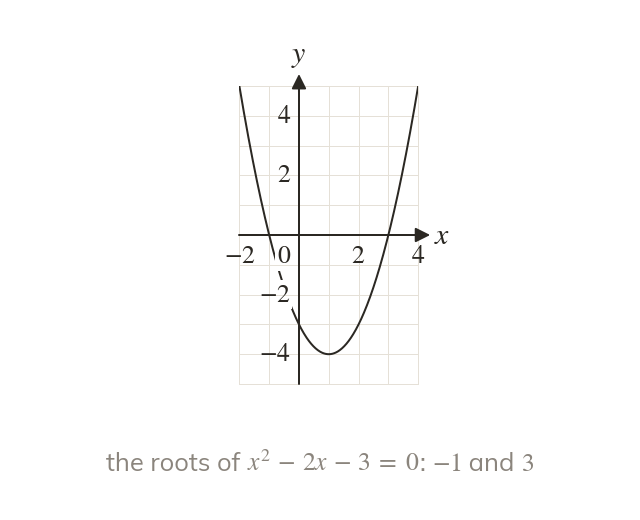
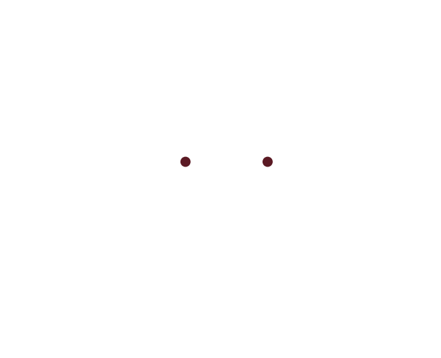
Roots are where
The roots are where the curve crosses the x-axis. They solve
The solutions of are where the curve crosses the x-axis. These values are called the roots.
Some quadratics will not factorise, but every one can be drawn. Today the graph shows us the solutions, and how many there are.
Work down the page at your own pace. Write every answer in your book first, then click to check it.
Read each card, then follow the worked examples one step at a time.


The roots are where the curve crosses the x-axis. They solve
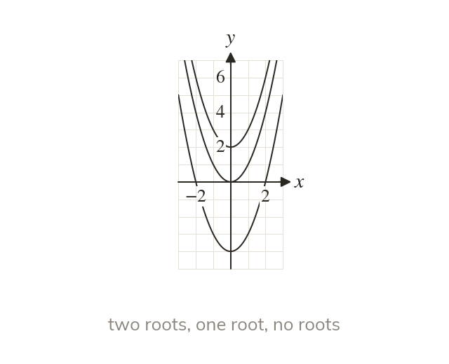
A curve may cross the x-axis twice, touch it once, or miss it. So a quadratic has two, one or no solutions.
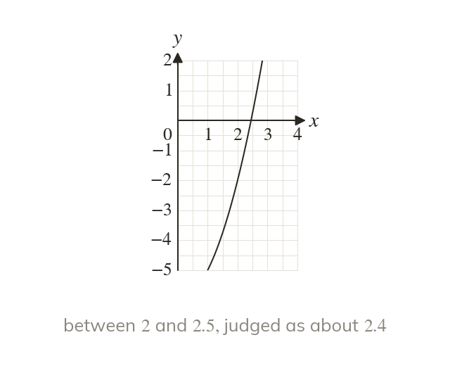
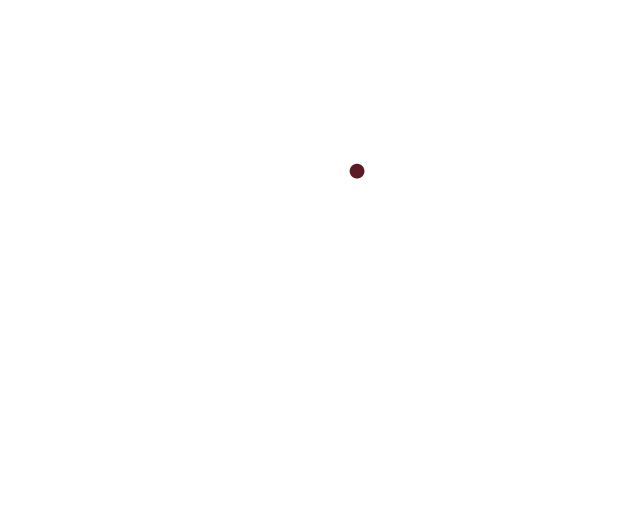
A root read from a graph is only as accurate as its scale. A crossing between two grid lines is judged, not measured exactly.
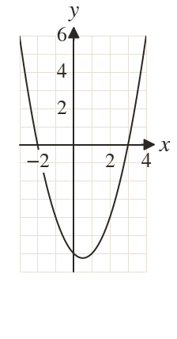
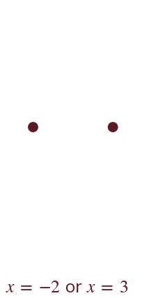
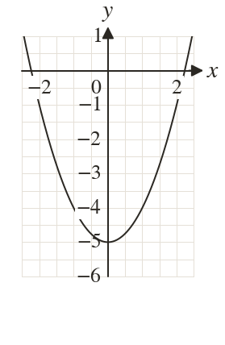
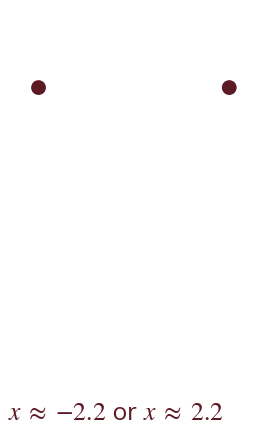
Pick an answer. If it's wrong, the feedback tells you which mistake it was.
Printable worksheet — the questions with room to work.

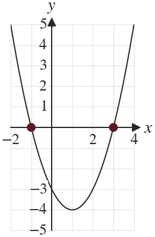

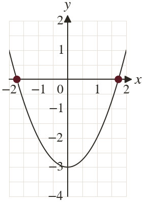
Read each card, then follow the worked examples one step at a time.
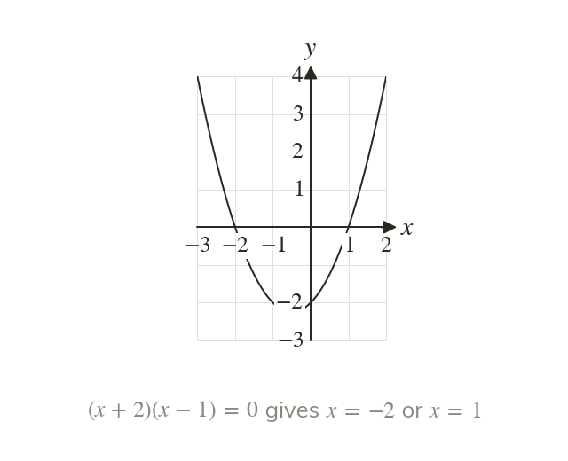
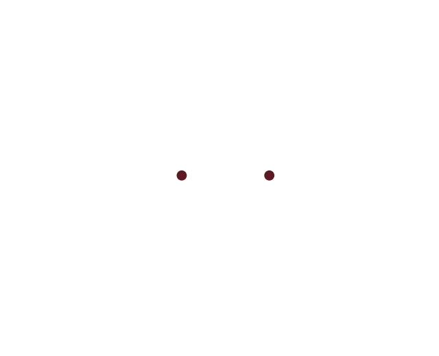
Factorising and the graph give the same roots. The curve crosses the x-axis at and
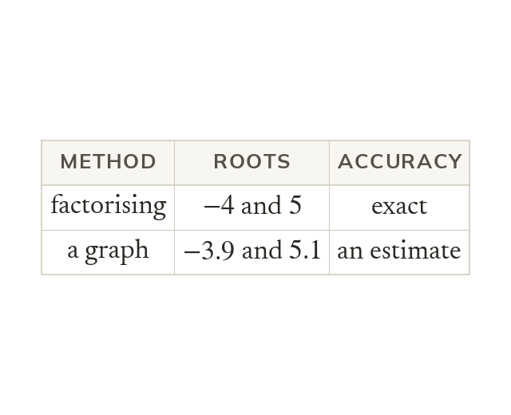
For factorising gives the roots exactly. A graph reading is an estimate, limited by its scale.
Pick an answer. If it's wrong, the feedback tells you which mistake it was.
Finished? Next lesson: 10.17.7 Symmetry and the Turning Point.
For each skill, tap the one that is true for you today. Your Revise pages start with anything you mark Not yet.
Your ratings are saved on this device only.
Log in, then search for a code to practise that skill.